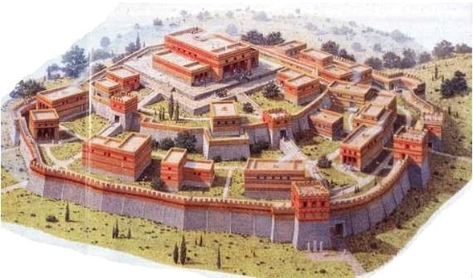
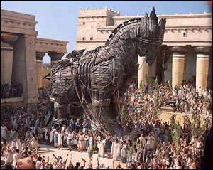
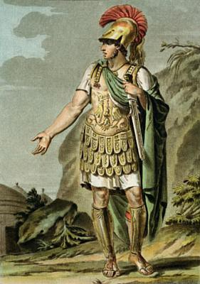

O que foi a Guerra de Troia?
A Guerra de Troia foi um conflito da Antiguidade envolvendo os gregos e a cidade de Troia. A história ficou famosa principalmente por causa dos poemas atribuídos a Homero, como a Ilíada e a Odisseia.
Conheça a história de uma das guerras mais famosas da Antiguidade
A Guerra de Troia foi um conflito da Antiguidade envolvendo os gregos e a cidade de Troia. A história ficou famosa principalmente por causa dos poemas atribuídos a Homero, como a Ilíada e a Odisseia.
Segundo a mitologia grega, a guerra começou depois que Páris, príncipe de Troia, levou Helena, esposa do rei Menelau de Esparta, para Troia. Menelau pediu ajuda aos outros gregos para recuperar Helena.
O Cavalo de Troia é uma das partes mais famosas da história. Segundo a tradição, os gregos construíram um enorme cavalo de madeira e deixaram-no como presente para os troianos. Soldados gregos teriam ficado escondidos dentro dele.
Durante a noite, os soldados saíram do cavalo e abriram os portões da cidade para o exército grego.
Aquiles foi um dos principais heróis da Guerra de Troia segundo a mitologia grega. Ele era conhecido por sua grande força e habilidade como guerreiro. Sua história ficou famosa por causa de seu ponto fraco, o chamado "calcanhar de Aquiles".


